Created: 03/05/2014
By: ArticNet
Email: info@articnet.jp
Thank you for purchasing WooCommerce Dropshippers. If you have any questions that are beyond the scope of this help file, please feel free to email via our user page contact form here. Thank you!
Extract woocommerce-dropshippers.zip and upload it to your WordPress plugin directory (usually /wp-content/plugins ), or upload the zip file directly from the WordPress plugins page. Once completed, visit your plugins page again and activate "WooCommerce Dropshippers"
Upon successful activation, the user role "Dropshipper" will be available from the users menu.
Since version 1.0 many changes have occurred, including a lot of additions to the custom role "Dropshipper". Because of this to upgrade from version 1.0 you must first disable the plugin, copy the new one via FTP or from the plugins page and re-enable the Dropshipper plugin.
Once the plugin is activated, you might need to re-assign the Dropshippers to the products.
In the WordPress admin panel, select Settings → WooCommerce Dropshippers.
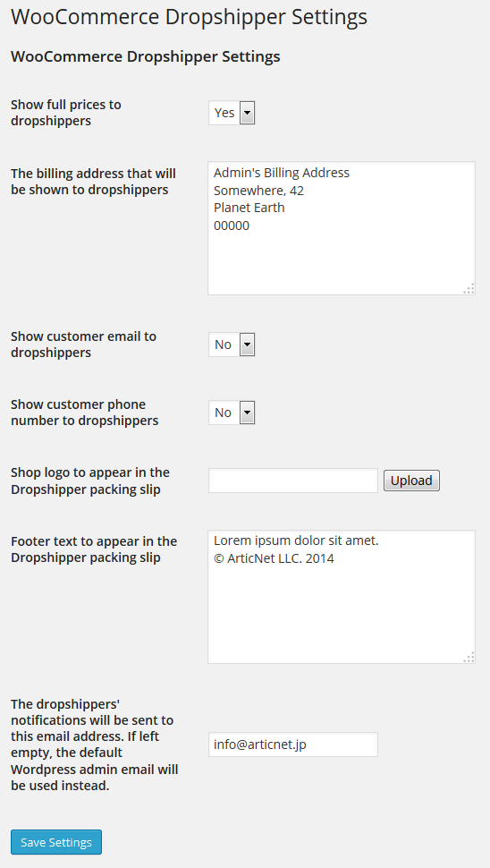
Here you can choose whether the Dropshippers affiliated with your website will be able to see the total price of their orders. This means that from their panel, they will see the full price of the products (their commission and the resell price you put on the store).
The second field is the billing address for the Dropshippers. It will be shown on the orders they get via mail, while the shipping address will be the address specified by the user when placing the order (just like every other order on Woocommerce).
The third field controls the ability of the dropshippers to see the customer's email address from their orders list
The next field does the same but for the customer's phone number.
The next two fields are used to display a custom logo and custom footer text in the packing slips that will be printed by dropshippers.
The last field is the email used to notify the admin that a dropshipper has shipped an order.
First of all, we need to assign the Dropshipper role to our selected users. To accomplish this, in the Admin dashboard go to Users → All Users.Once here, select the user that you want to turn into a dropshipper. In this example we will use the user "John" with the role Subscriber.
Hover on the name and select "Edit" to go into the user edit screen.
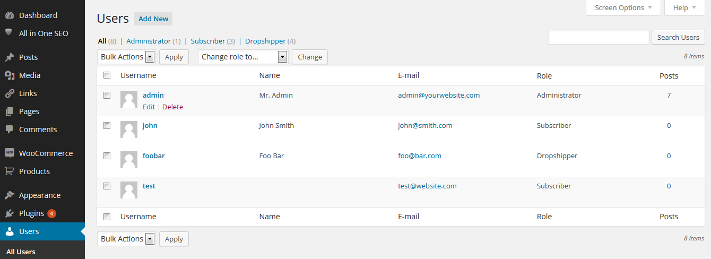
Change the role to "Dropshipper" and click the blue button "Update User" to save the new role. The user John is now officially a Dropshipper and we can assign him to various product in the market.
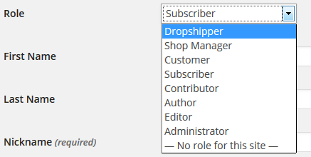
Users who have become Dropshipper, will now be displayed in a separated screen under Users → Dropshippers list. From here you can keep an eye on all dropshipper earnings.
If a dropshipper has set his PayPal email address from his profile, you will see the button and you will be able to send him/her a payment directly from this page. Otherwise you can choose to pay a dropshipper the way you prefer outside the website (bank transfer, check, etc...). The button reset earnings will allow you to reset the earnings of a dropshipper once the payment is done.
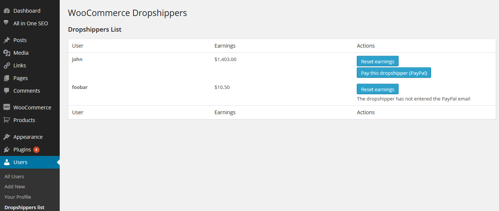
To assign a product to one dropshipper we need to go to the product edit page. There will be a new widget called "Dropshipper"(If you do not see that, go on the top right corner of the product page and under "Screen Options" put a check mark on "Dropshipper"). To assign the product to a specific dropshipper user, just select his name from the list of dropshippers. Then click "Update" to save the changes made.
You can set a Dropshipper price in both Simple products and Variable products. The price you set here will be used to calculate the amount owed to the dropshipper for each product (or product variation) sold.
Example: Simple product
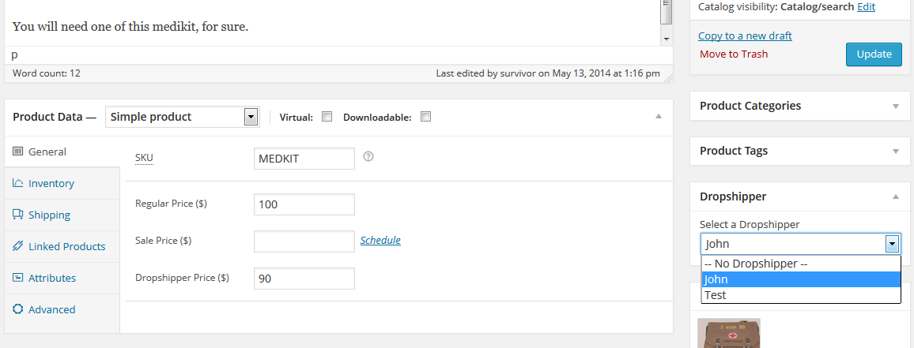
Example: Variable product
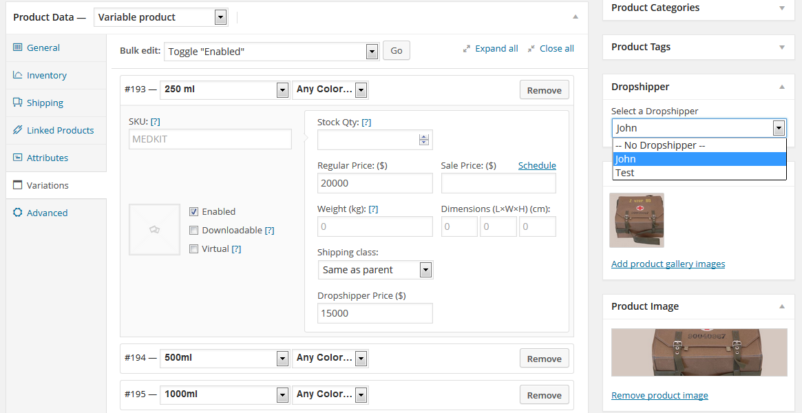
Once logged in as a dropshipper, the user will land on a regular Subscriber Dashboard but with a new widget: WooCommerce Dropshipper Right Now.
With this widget the dropshipper is able to see how many products he has sold on the market.
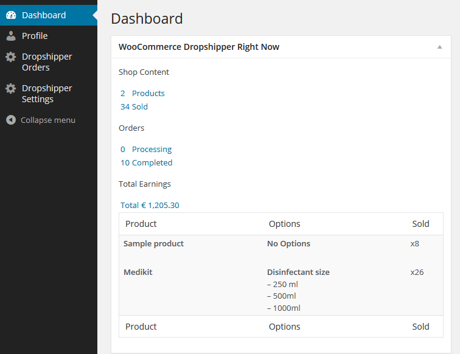
In addition to the widget, there will also be two new pages: Dropshipper Orders and Dropshipper Settings.
In the Dropshipper Orders page a dropshipper can view all orders placed on his products. New dropshippers orders will be visible when the payment is completed (order status "processing").
Once the order is visible on the dropshipper's page, the dropshipper can notify the admin of the shipment of the product by clicking the button Mark as Shipped. The mail sent to the admin will containt the order number, the dropshipper name and all the shipping information entered by the dropshipper.
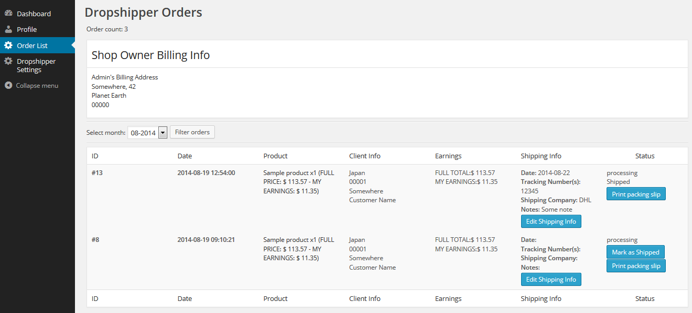
By pressing the button Edit Shipping Info you will get a popup window containing all the information that a dropshipper can report to the admin.
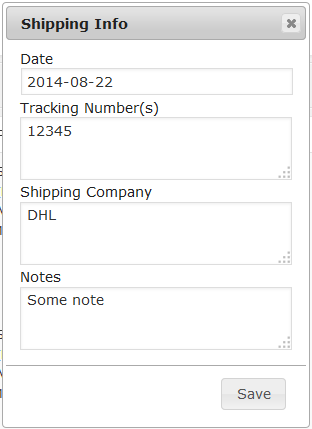
By pressing the button Print packing slip you will get the following popup window containing the packing slip ready to be printed.
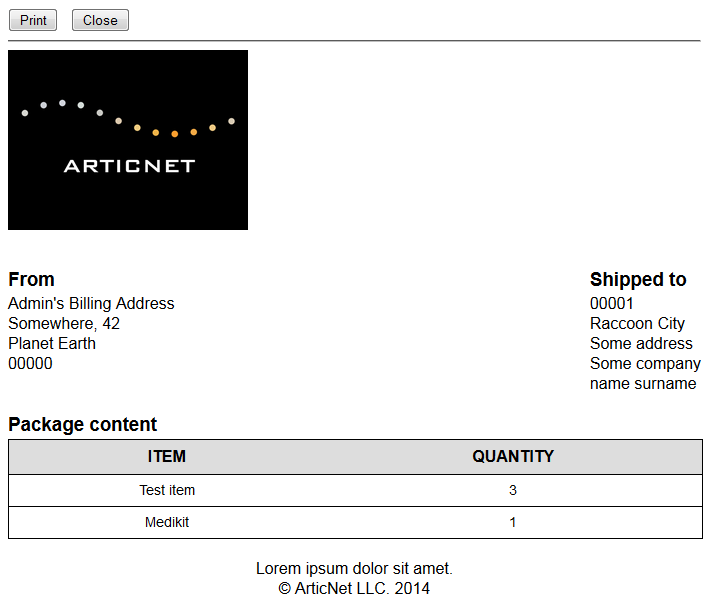
In the Dropshipper Settings page a dropshipper can set his PayPal email (if he has a PayPal account) and choose the currency displayed in his order page. Currencies that differs from the default currency of the shop will be automatically converted via Yahoo! Finance.
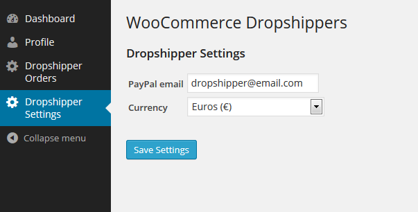
The regular order page now shows the column Dropshippers.
In this column an admin is able to see all the dropshippers involved in an order and who have already shipped their merchandise.
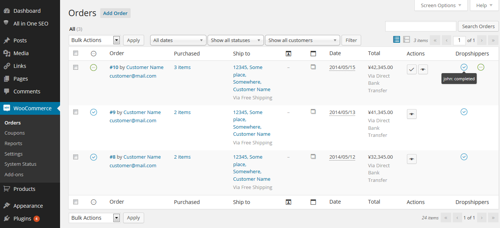
The dropshippers' status can be Completed (blue icon) or Processing (green icon).
v1.7 - 26/09/2014 - Added Multilanguage support for custom translation with .po/.mo files - Added field for custom email for dropshippers' notifications in admin panel - Added the ability for dropshippers to enter information about shipping for the admin in their orders - Added dropshipper shipping information in notification emails and order view in admin panel - Improved the dropshipper orders page to be more easy to read
v1.6 - 10/06/2014 - Added packing slip for Dropshippers - Added fields for packing slip to the admin panel
v1.5.1 - 29/05/2014 - Bug fixing
v1.5 - 15/04/2014 - Added currency converter setting in the Dropshipper dashboard - Added "dropshipper price" field in products and products variations - Added Dropshipper total balance of sold goods - Added Dropshippers list in Admin console with Balance, email and PayPal payment - Added "Show telephone" switch to the admin panel - Added "Show email" switch to the admin panel - Added Dropshipper settings page with currency selector and email field for PayPal
v1.0 - 03/05/2014 - First stable release
© ArticNet 2014